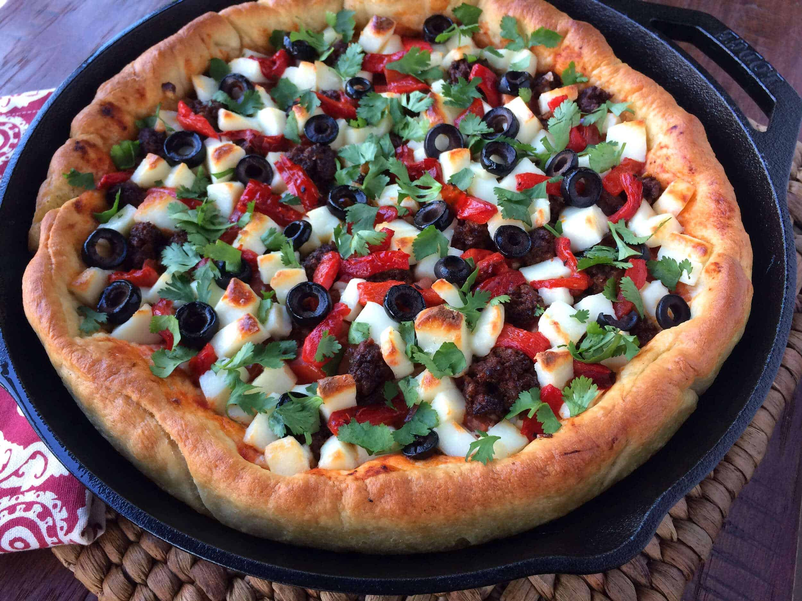

Pizza

A simple recipe for extra cheese pizza on top of the best homemade pizza dough. Makes one 12-inch pizza or you can make two pizzas from my entire crust recipe and double the toppings listed below.
Ingredients
- Pizza Crust
- 1/2–3/4 cup (127-190g) pizza sauce, depending how much you like (homemade or store-bought)
- 8 ounces sliced mozzarella cheese
- 1 and 1/2 cups (6oz or 168g) shredded mozzarella cheese
- 2–3 Tablespoons (10-15g) grated parmesan cheese
- ground basil or Italian seasoning, to taste
Instructions
- Prepare the ready made pizza crust and preheat the oven to 475°F (246°C)
- Top the dough with the pizza sauce, then the sliced mozzarella, then the shredded mozzarella, grated Parmesan, then sprinkle with basil.
- Bake for 12-15 minutes. For the last minute, I move the oven rack to the top rack to really brown the edges. (That’s optional)
- Slice hot pizza and serve immediately. Cover leftover pizza tightly and store in the refrigerator. Reheat as you prefer.